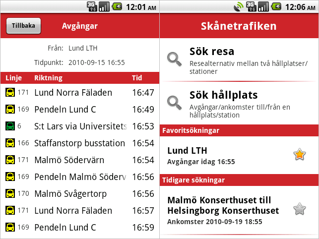

Android application to search trips and time tables for Skånetrafiken's trains and busses. See the web page, Lokaltrafik Skåne (Skånetrafiken for Android), for more information and screenshots.
 Figure 1: Two screenshots of Lokaltrafik Skåne showing the welcome activity to the right and departures from a certain station to the left.
My application does a couple of thing better than the official one:
Search for "lokaltrafik" on Android Market.